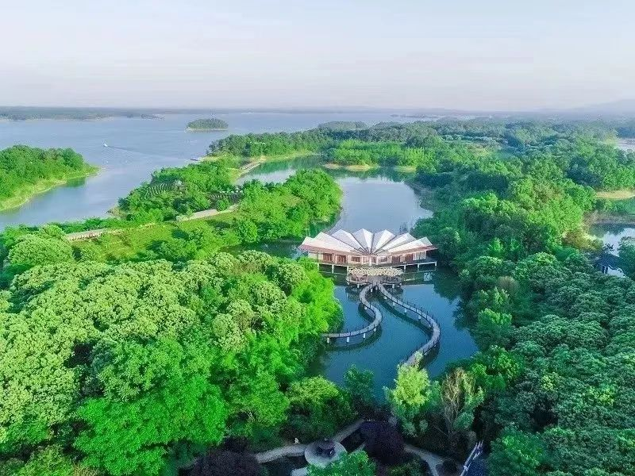

名胜风景
鸡公山鸡公山，位于河南省信阳市境内，桐柏山以东，大别山最西端，是中国四大避暑胜地之一，也是新中国第一批对外开放的全国八大景区之一，第一批列入全国44个国家级重点风景名胜区之一，鸡公山是国家级自然保护区，区内森林茂密、生物资源丰富，有国家重点保护动植物大鲵、长尾雉、香果树等，是河南农林、师范、医药等高校教学和科研基地。 鸡公山有“青分豫楚、襟扼三江”之美誉，“佛光、云海、雾凇、雨凇、霞光、异国花草、奇峰怪石、瀑布流泉”被称为八大自然景观，山上有清末民初不同国别和风格的建筑群，有“万国建筑博物馆”之美称 >>> |
|---|
|

南湾湖南湾湖景区位于河南省信阳市西南五公里，总面积720公里，其中景区水域面积75平方公里，最大蓄水量16.3亿立方米，是国家AAAA景区、国家森林公园、国家水利风景区、中国森林氧吧，省级文明风景区，先后获得“中国中部旅游胜地三十佳”,“中国健康养生休闲度假旅游最佳目的地”等荣誉称号，素有“中原第一湖”之美称。景区地处亚热带向暖温带过渡地区，兼具“江南北国、北国江南”之特色，雨量充沛，资源丰富，气候温和，四季分明，适宜多种动植物生长，生态资源丰富，各类动植物2000多种 >>> |
灵山信阳灵山风景名胜区位于河南省罗山县西南部境内，西南分别与信阳鸡公山管理区、湖北省大悟县交界，东连鸡笼山，西邻鸡公山、南湾湖，含六大景区：灵山寺景区、逍遥洞景区、金顶景区、龙凤祥林景区、龙牙寺景区、九里落雁湖景区，集国家级自然保护区、生态示范区、鸟类保护区于一体。景区总面积61.5平方公里。 >>> |
北国江南 宜居名城
welcome to 信阳！